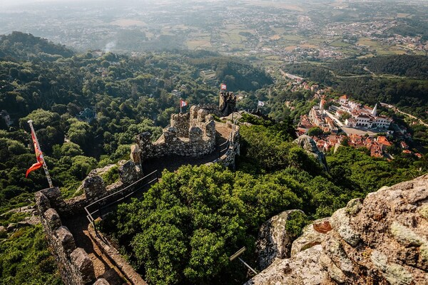
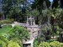
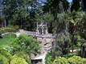
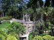
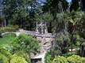

Uma cidade mágica 🌿
Sintra é uma cidade encantadora, cheia de história, palácios, jardins e uma natureza incrível. Explore a magia dos seus monumentos e paisagens.
Fotografias

 


Sintra é uma cidade encantadora, cheia de história, palácios, jardins e uma natureza incrível. Explore a magia dos seus monumentos e paisagens.
